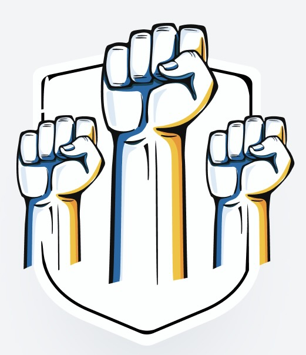

Help Ukraine in the war with Russia!
Glory to Ukraine!
Stand with Ukraine is non-profit Canadian organization supporting the people of Ukraine in their pursuit of a democratic society with dignity, justice, and human and civil rights. All fundraising money will directly go to the National Bank of Ukraine (NBU) Special Account to Raise Funds for Ukraine’s Armed Forces & women with children affected by the war.
Stand with Ukraine is non-profit Canadian organization supporting the people of Ukraine in their pursuit of a democratic society with dignity, justice, and human and civil rights. All fundraising money will directly go to the National Bank of Ukraine (NBU) Special Account to Raise Funds for Ukraine’s Armed Forces & women with children affected by the war.
Our need for your support is more urgent than ever. Share & donate, it all matters!